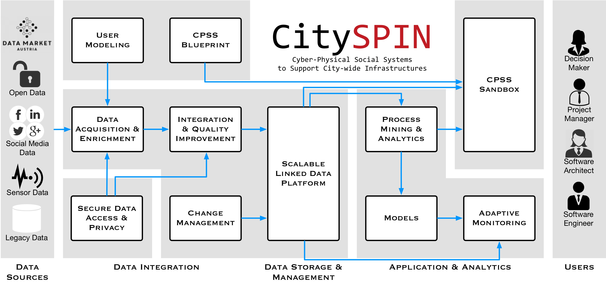

albin.ahmeti@semantic-web.com
saimir.bala@wu.ac.at
stefan.belk@semantic-web.com
fajar.ekaputra@tuwien.ac.at
jfernand@wu.ac.at
elmar.kiesling@tuwien.ac.at
a.koller@semantic-web.at
jan.mendling@wu.ac.at
angelika@computer.org
jmusil@computer.org
axel.polleres@wu.ac.at
peb.aryan@tuwien.ac.at
marta.sabou@ifs.tuwien.ac.at
solti@ai.wu.ac.at
Keywords
Linked Data
Cyber-physical social systems
Smart City
CitySpin is an Austrian research project funded by the Austrian Federal Ministry of Transport, Innovation and Technology (BMVIT) and the Austrian Research Promotion Agency (FFG) under the program
ICT of the Future
. The CitySPIN project aims to create a platform for cyber-physical social systems in order to facilitate innovative Smart City infrastructure services. The project is at the forefront of cyber-physical systems research and aims to extend those systems with a social dimension (i.e., cyber-physical social systems).
Large-scale public infrastructures such as transportation and energy networks are vital arteries of urban environments. Citizens expect such city-wide systems to function effectively, efficiently, user-friendly, and in an environmentally friendly manner. In order to ensure such operation, infrastructure providers need a real-time view on the operational status of the infrastructure to effectively control it. To this end, infrastructure providers make great strides towards building cyber-physical systems (CPS) [1] that have the potential to transform their services.
An emerging trend is the growing recognition of the importance of the social dimension of such CPSs and of the need to evolve them into cyber-physical social systems (CPSS) [2] . Such systems consist not only of software and raw sensing and actuating hardware, but are fundamentally grounded in the behaviour of human actors who both generate data and make informed decisions based on data. This raises new research challenges due to additional complexity introduced by social systems in terms of (i) unpredictability due to social dynamics, (ii) privacy concerns associated with the processing of sensitive social data, and (iii) the number and heterogeneity of data sources that need to be integrated.
The project’s main goals are to (i) advance the understanding of CPSSs and their design principles; (ii) provide a platform that addresses the data integration challenges in CPSSs, and (iii) validate the project findings by means of real-world use cases. To that end, the project follows a multidisciplinary approach that brings together research on CPS, Collective Intelligence Systems, Software Engineering, Linked Data, Security and Privacy, and Process Mining.
The project goals will materialize in a number of concrete, innovative results including (i) a CPSS Blueprint that will foster the understanding of CPSSs and provide a taxonomy of CPSSs and a catalogue of suitable architectural patterns; (ii) a CPSS Sandbox, i.e., a visual environment that eases CPSS design by allowing stakeholders to experiment with data processing pipelines constructed from intelligent building blocks for data acquisition, integration, and analytics; (iii) a technology stack that provides a scalable, privacy-aware data integration framework based on Linked Data technologies; and (iv) demonstrators that apply the developed methods and components to implement two use cases in the energy and transportation domain.
These goals will be achieved through theoretical and conceptual developments as well as a set of innovative technological components - illustrated in Figure 1 - that support the CPSS design process in a uniform platform for key stakeholders including decision makers, project managers, software architects, and software engineers.

Supported by the Austrian Federal Ministry of Transport, Innovation and Technology (BMVIT) and the Austrian Research Promotion Agency (FFG) under the program
ICT of the Future
.
Guo, W., Zhang, Y., & Li, L. (2015). The integration of CPS, CPSS, and ITS: A focus on data. Tsinghua Science and Technology, 20(4), 327–335. http://doi.org/10.1109/TST.2015.7173449
Wang, F.-Y. (2010). The Emergence of Intelligent Enterprises: From CPS to CPSS. IEEE Intelligent Systems, 25(4), 85–88. http://doi.org/10.1109/MIS.2010.104